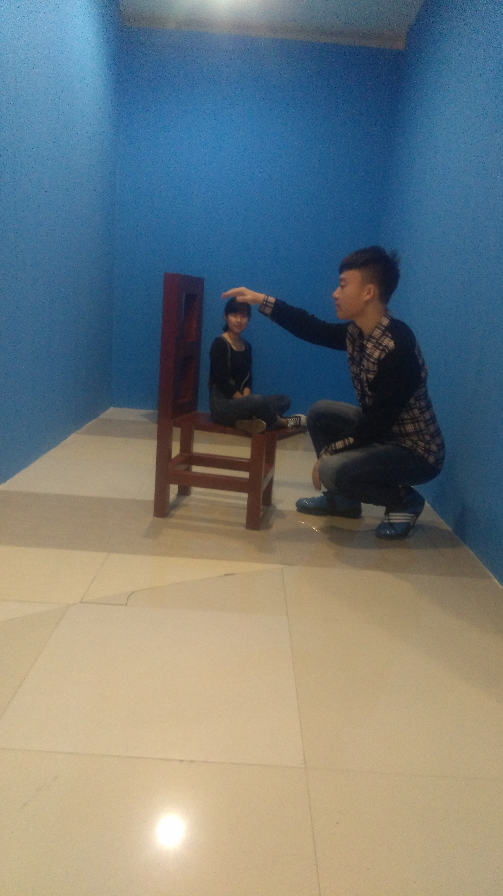

我爱你
1921
天
15 hours 24 minutes 30 seconds
生活不止眼前的苟且，还有诗和远方
点亮小黄灯6盏，未来一起加油哇...

狗P 情话
- 2013.03
“ 我喜欢你 ”
- 2016.11
“ 你给我买个锅，我给你做一辈子饭 ”
- 2017.03
“ 谢谢你，愿意接受一个不懂浪漫的人的罗曼蒂克 ”
- 2017.05
“ 你知道每天对我都是520，只是今天日历也在帮我提醒你，还有一个爱你的，每天晚上都会想你的，把爱你当成骄傲的男人 ”
- 2017.09
“ 你在时你是一切，你不在时一切是你 ”
- 2018.01
“ 爱你这件事就像潜意识，不需要我去思考就自然而然的涌现出来 ”
- 我：
......以后要拾起收藏的习惯
温馨一刻vlog
谢谢你，亲爱哒
谢谢你与我立黄昏，问我粥可温，陪我夜已深，与我捻熄灯。想念你做的饭菜，虽然不是很美味，每次都舍不得夸你，但确实甜在我心坎。想和你一起买菜，帮你洗菜， 我看到了，最动人的不是风花雪月的浪漫，而是柴米油盐的日子，你陪我一起过出了味道。每次蛮不讲理提出要求， 然后看着你叹口气，最后全都依了我，很过瘾，我的男仆人，谢谢你对我的宠爱，爱你。
